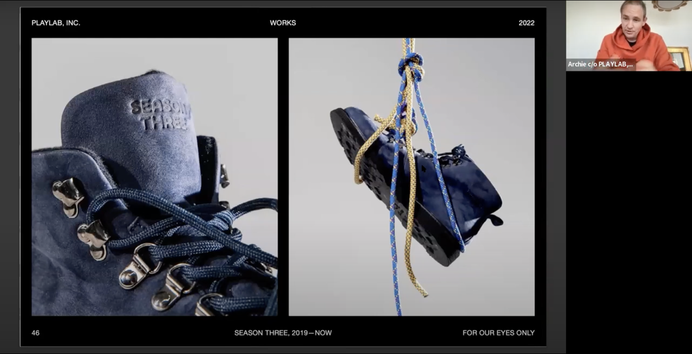

<p>Archie Lee Coates IV CD Lecture
    <br>
    Archie Lee Coates IV is the cofounder of Playlab which is a creative studio that explores themes using architecture, art, and graphic design to build a world for others. In the presentation, the speaker talks about the importance of tangents, and how growing up his whole life would be going off on a tangent. Moreover, the speaker talked about how while he had both encountered success and failure in his projects, some of his failures had allowed him to obtain important artifacts as a result. Archie emphasizes how his practice involves encountering new things that he and his team did not initially have experienced. Archie also emphasizes the strong belief that art is something that people can have conversations about. Regarding his projects, there is a similar connection in which most of his major projects are due to his friends and connections introducing various tasks for him and his studio to work in for experience. As a result, Archie and his studio had evolved into different practices over the years, and Archie holds his studio and collaborators in projects very highly. Archie describes his abundance of emotions with working big gigs in various locations,
</p>

